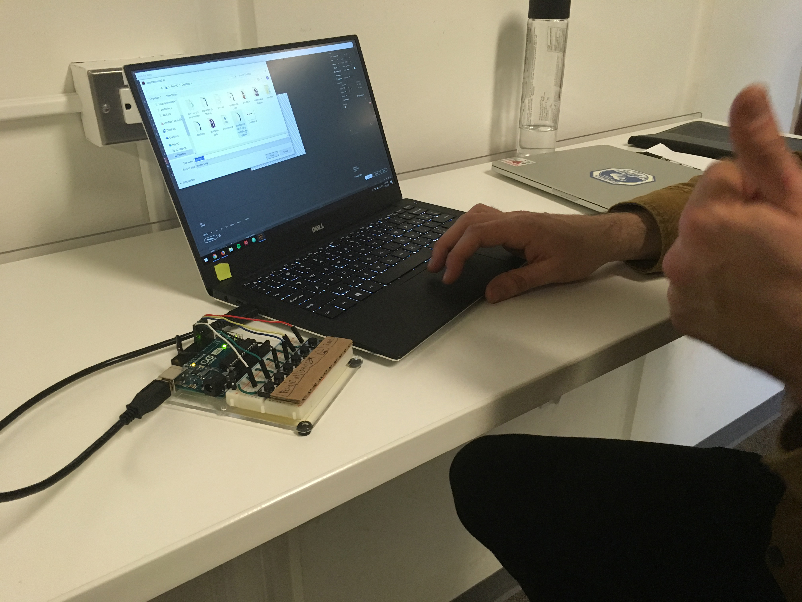
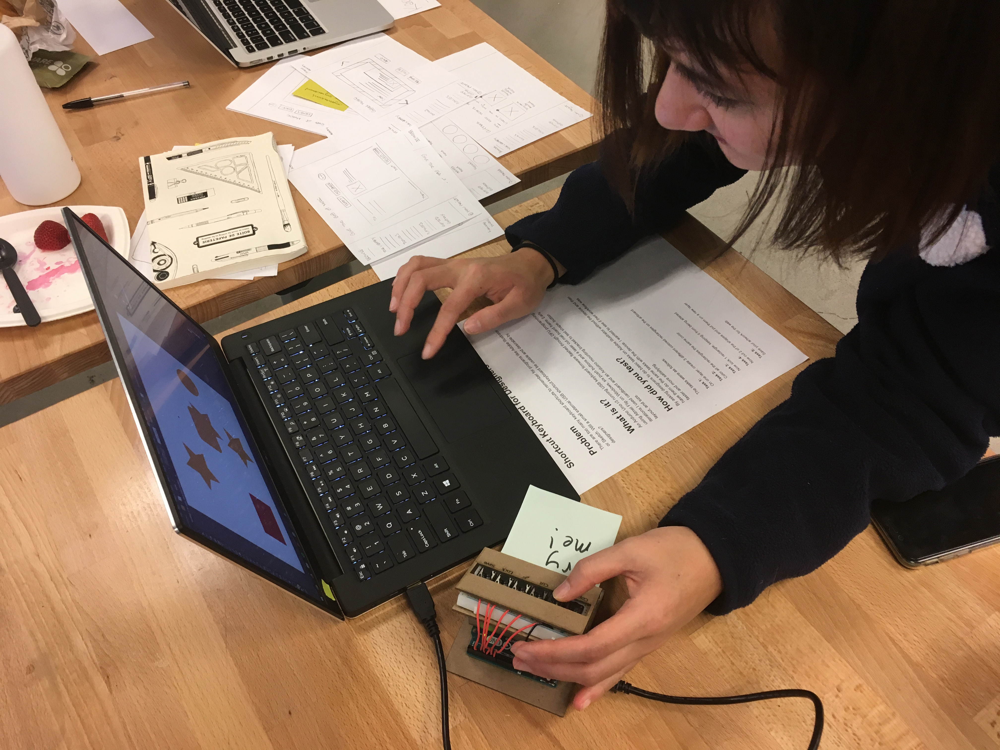

Shocutz, a Shortcut Keyboard for Designers
Specs
Designers use a lot of shortcuts to maximize productivity whether it's coding, using Photoshop, or simply typing up a document. I hypothesize that a small portable micro-keyboard could be useful in the context of designers. Design software contains dozens of shortcuts; it's impossible to remember them all. Other shortcut keyboards are marketed towards gaming or media production and are prohibitively expensive. Adobe Illustrator has over 100 shortcuts. What if there was a way to streamline access to these shortcuts? Would an external USB device with quick shortcut keys be desirable and usable by designers? If so, what shape and features might the device contain?
Goals
-
- Determine the usability of an external USB shortcut keyboard? Specifically, does it increase the efficiency or learn-ability of Adobe Illustrator.
- Would something like this be desirable by designers. Could they see themselves using a product like this in the future?
Implementation
Before I could start building anything I began sketching possible layouts and putting ideas to paper. I wasn't sure what I was going to be able to get done in two weeks or if I was even going to be able to get an Arduino to cooperate.
Next I began researching ways to make an Arduino work as a USB keyboard. I discovered that the Micro Pro and Leonardo are best suited for programming a Human Interface Device (HID) because of the Keyboard.h library. Unfortunately, I don't have either of those microcontrollers.
Being the cheap college student that I am, and too impatient to wait for shipping, I decided to try to make it work with an Arduino Uno. I did this based off of this 6 year old tutorial and the GitHub repository here. Without this documentation I would have been completely lost.
The process for getting the Uno to work as a USB device is tedious but doable. In order to get the Uno to work as a USB device you must update the USB protocol with something called Device Firmware Update (DFU). This process flashes new firmware to the unit.

The workflow for programming the Uno this way is as follows:
1. Upload Sketch in Arduino 2. While plugged in, Short the Arduino 3. Use Atmel Flip (or DFU terminal commands on Mac or Linux) to upload Arduino-keyboard-0.3.hex 4. Power cycle the Uno 5. Test buttons and uploaded sketch 6. Short the Uno again 7. Ppload Arduino-usbserial-uno.hex with Flip 8. Power cycle the Uno 9. See that the com port detected the Uno 10. Rinse and repeat until the desired shortcuts and sketch is uploadedThis process is not ideal, but it works. Once I got this process down, I began modifying the example Arduino sketch. It took a while to figure out which hexadecimal keys were for which keyboard keys. I managed to find some very good documentation on it.
I also had to decide on which buttons to have the keyboard. Since I was testing usability, I decided I wanted to have a combination of commonly used keys and some more specialized keys. I ended up settling on Copy, Paste, Cut, I (Adobe Illustrator Eyedropper tool), Lock current layer (control + 2), and Save for Web (Control + Shift + Alt + S). I then uploaded this sketch to the unit.
#define KEY_LEFT_CTRL 0x01
#define KEY_LEFT_SHIFT 0x02
#define KEY_LEFT_ALT 0x04
uint8_t buf[8] = {
0 }; /* Keyboard report buffer */
#define PIN_COPY 7
#define PIN_CUT 5
#define PIN_PASTE 6
#define PIN_EYEDROP 4
#define PIN_LOCK 3
#define PIN_SAVE 2
int state = 1;
void setup()
{
Serial.begin(9600);
pinMode(PIN_COPY, INPUT);
pinMode(PIN_CUT, INPUT);
pinMode(PIN_PASTE, INPUT);
pinMode(PIN_EYEDROP, INPUT);
pinMode(PIN_LOCK, INPUT);
pinMode(PIN_SAVE, INPUT);
// Enable internal pull-ups
digitalWrite(PIN_COPY, 1);
digitalWrite(PIN_CUT, 1);
digitalWrite(PIN_PASTE, 1);
digitalWrite(PIN_EYEDROP, 1);
digitalWrite(PIN_SAVE, 1);
digitalWrite(PIN_LOCK, 1);
delay(200);
}
void loop()
{
state = digitalRead(PIN_CUT);
if (state != 1) {
buf[0] = KEY_LEFT_CTRL; // Ctrl
buf[2] = 27; // Letter X
// buf[2] = 123; // Cut key: Less portable
Serial.write(buf, 8); // Ssend keypress
releaseKey();
}
state = digitalRead(PIN_COPY);
if (state != 1) {
buf[0] = KEY_LEFT_CTRL; // Ctrl
buf[2] = 6; // Letter C
// buf[2] = 124; // Copy key: Less portable
Serial.write(buf, 8); // Send keypress
releaseKey();
}
state = digitalRead(PIN_PASTE);
if (state != 1) {
buf[0] = KEY_LEFT_CTRL; // Ctrl
buf[2] = 25; // Letter V
// buf[2] = 125; // Paste key: Less portable
Serial.write(buf, 8); // Send keypress
releaseKey();
}
state = digitalRead(PIN_EYEDROP);
if (state != 1) {
buf[0] = 0; // Empty Buffer[0]
buf[2] = 0x0C; // Letter I
Serial.write(buf, 8); // Send keypress
releaseKey();
}
state = digitalRead(PIN_SAVE);
if (state != 1) {
buf[0] = KEY_LEFT_CTRL + KEY_LEFT_SHIFT + KEY_LEFT_ALT;
buf[2] = 0x16; //S Key
Serial.write(buf, 8); // Send keypress
releaseKey();
}
state = digitalRead(PIN_LOCK);
if (state != 1) {
buf[0] = KEY_LEFT_CTRL;
buf[2] = 0x1F; // 2 Key
Serial.write(buf, 8); // Send keypress
releaseKey();
}
}
void releaseKey()
{
buf[0] = 0;
buf[2] = 0;
Serial.write(buf, 8); // Release key
delay(500);
} Below are some iterations of the prototype. I started with using card board to model possible layouts. I also used an Arduino plastic mounting bracket to organize the breadboard and Arduino. I finally laser cut labels and a case out of mat-board to hide the Uno as seen in my Evaluation of the prototype.
Evaluation
I was evaluating primarily the usability, but also the desirability of having a small keyboard shortcut for designers while using Adobe Illustrator. To test this, I set up an informal usability test with five tasks and post-test questions.
I tested fellow HCDE students and asked them to complete these five tasks on my computer without the shortcut keyboard. Then I had them preform the same five tasks with the shortcut keyboard.
Task 1: On one layer, create 3 different colored rectangles on the artboard Task 2: Color all the rectangles the same color Task 3: Now lock 1 rectangle, keeping it from being altered. Task 4: Now cut 2 of the shapes and put them on a new layer Task 5: Save your artwork for the web Post-test Questions
- How satisfied were you in completing those tasks?
- Was there anything that could be changed to make the design better?
- Could you see yourself using a design like this in the future?
Analysis
I received valuable feedback from participant 1 about placing buttons in a more intuitive way that mirrors Adobe Illustrators UI. From this feedback I also rearranged the layout for copy, paste, and cut. Before testing, the button layout had paste, cut, copy which did not make sense logically for my first two usability study participants. Participant 1 also indicated that this would be helpful to newcomers to AI as well as professionals. Participant 2 was very satisfied with the lock to current layer and save for web buttons. He recommended making the keyboard more ergonomic by having a slightly angled interface. While participants were sitting they had to place their fingers straight down to push the buttons and read the labels. Overall, they both reacted positively to the prototype and noted it would take a while to learn how to integrate it into their workflow, but that it would be desirable to have.
Based on this feedback, I decided I was ready to laser cut an enclosure and test out an angled interface that might be more usable. You can see the progression of prototyping techniques above starting with cardboard, then mounting bracket + cardboard and finally laser cutting mat-board.
Prototyping and Usability Testing Arduino and Laser cutting Shocutz logo credit to Lucas C.
Reflection
I did more informal user testing at the Prototyping Open House. Many students were surprised and engaged by the functionality of the prototype. The general sentiment was that this would help them with complicated software. I did get more feedback on the mat-board enclosure and suggestions for increasing usability. The mat-board had more give that people expected and some people did not push the buttons down all the way. I plan to laser cut a better enclosure out of a sturdier material. Additionally, the angle of the keyboard was awkward for many people to use while standing up so I plan to make a much shallower angle. Furthermore, I'd like to experiment with button types and button layouts for the future. It is critical that this device remain small and inexpensive for it to compete with other products currently on the market. A minor change I would like to make is to program it for Mac OS instead of Windows. This will be a relatively simple change in the code-switching control keys to command keys. The next step is creating a higher fidelity enclosure out of wood or plastic.
Back to Previous Page Next Project